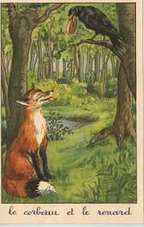

Bonjour et bienvenue sur mon site ! Je me nomme AKONDE Amour Davy Daniel. Je suis né le 20 Septembre 2006 et je suis étudiant
Ceci est mon premier test , et je suis vraiment heureux d'écrire ma première page web. Je deviendrais certainement un grand Webmaster dans quelque temps
POINT p 1: Le xhtml ?
Le langage XHTML est le langage qui nous permet de créer des sites web en ce début de XXIèmesiècle.
Avant, vers la fin du XXème, on utilisait le langage HTML, qui disparaît aujourd'hui peu à peu au profit de XHTML.
Vous souvenez-vous de la phrase célèbre qu'a prononcé Neil Armstrong en posant le premier pied sur la Lune ? C'est un petit pas pour l'Homme , un grand pas pour l'humanité
. C'était un certain 20 Juillet 1969...
Voici ce qui est sans aucun doute une des plus connues fables de La Fontaine :
Maître Corbeau, sur un arbre perché ,
Tenait en son bec un fromage.
Maître Renard , par l'odeur alléché ,
Lui tint à peu près ce langage :
"Hé ! bonjour, Monsieur du Corbeau .
Que vous êtes joli ! que vous me semblez beau !
Sans mentir ,si votre ramage
Se rapporte à votre plumage,
Vous êtes le Phénix des hôtes de ces bois."
A ces mots le Corbeau ne sent pas de joie ;
Et pour montrer sa belle voix,
Il ouvre son large bec, laisse tomber sa proie.
Le Renard s'en saisit ,et dit : "Mon bon Monsieur,
Apprenez que tout flatteur
Vit aux dépens de celui qui l'écoute :
Cette leçon vaut bien un fromage sans doute "
Le Corbeau,honteux et confus,
Jura, mais un peu plus tard , qu'on ne l'y prendrait plus.